Параллельное создание операций «Создать все» в обработке распределения доходов по ценным бумагам
Цель прогона - подтвердить, что оптимизированная обработка
внРаспределениеДоходовПоЦеннымБумагам в режиме параллельного «Создать все»:
| Параметр | Значение |
|---|---|
| Задача | IMDEV-9302 |
| Объект тестирования | Внешняя обработка распределения доходов по ЦБ (оптимизация) |
| Вспомогательные EPF | Удаление операций; Сравнение результатов распределения доходов по ЦБ |
| Период / дата создания | 18.03.2026 |
| Пул | Розничное ДУ |
| Брокер | Банк ВТБ (ПАО) |
| Объём выборки | НКД = 7 582; Погашение = 0; Дивиденды = 0 |
| Фильтр | Только с комментарием автообработки |
| Источник снимков | ОперацияПоСчетуБрокера |
| Снимок ДО | 11.08.2026 09:10:22 → snapshot_before_1803.json |
| Снимок ПОСЛЕ | 11.08.2026 11:01:26 |
| Отчёт сравнения | 11.08.2026 11:02:09 → Сравнение.txt |
ИТ тестирование 9302.docx (11 скриншотов),
файл Сравнение.txt, базовый замер baseline_speed_old.html.
| Скорость | ≈ 42,4 док/мин (0,71 док/сек) |
|---|---|
| Прогноз на ~20 тыс. строк | ≈ 7 ч 45 мин |
| Источник | baseline_speed_old.html (НКД 19 688) |
| Скорость | 658,4 док/мин (10,97 док/сек) |
|---|---|
| Факт на 7 582 | 11 мин 31 сек |
| Прогноз на ~20 тыс. | 30-40 минут |
| Метрика прогона 11.08.2026 | Значение |
|---|---|
| Старт | 11.08.2026 10:46:39 |
| Финиш | 11.08.2026 10:58:10 |
| Режим | Параллельно |
| Создано / ошибок | 7 582 / 0 |
| Строк ДО = ПОСЛЕ | 7 582 = 7 582 |
| Только в ДО / только в ПОСЛЕ / расхождения полей | 0 / 0 / 0 |
Перед удалением выгружен снимок операций за 18.03.2026:
найдено 7 582 операций (НКД=7582, Погашение=0, Дивиденды=0),
файл snapshot_before_1803.json.
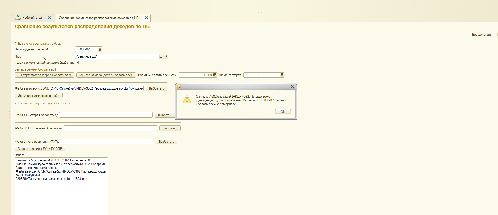
Обработка удаления: период 18.03.2026-18.03.2026, N=7582, фильтр «только созданные обработкой». Найдено к удалению: 7582.
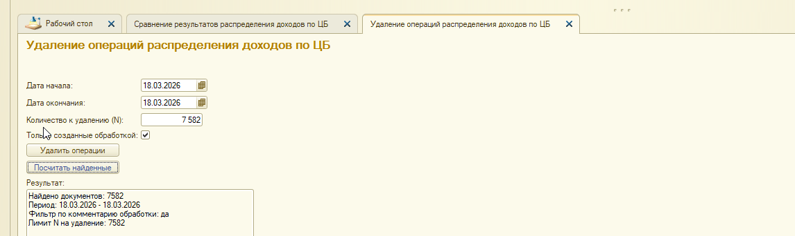
После удаления запущено заполнение. Вкладка НКД: 7 582 отмеченных строк, колонка «Операция по счету брокера» пустая - документы ещё не созданы.
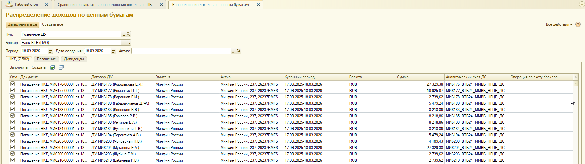
Старт: 11.08.2026 10:46:39. Окно БСП: «Создание операций по счету брокера, строк: 7582», прогресс от 0% до промежуточных значений (на скрине 14% / 1 100 из 7 582).
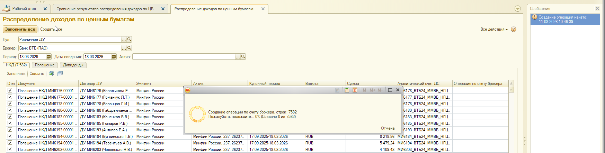
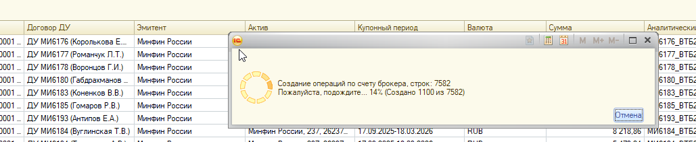
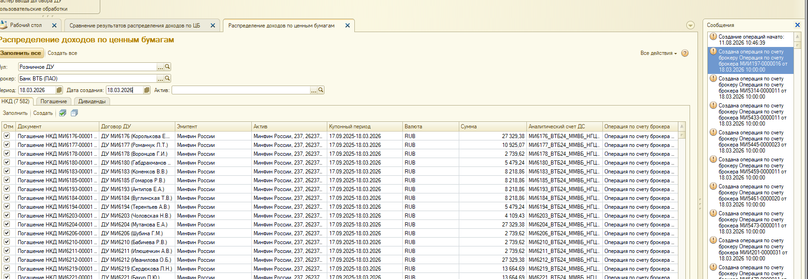
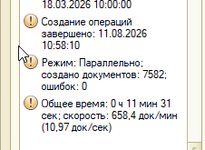
Повторное заполнение завершилось сообщением «Заполнение завершено», табличная часть НКД пустая - все строки уже обеспечены созданными операциями.
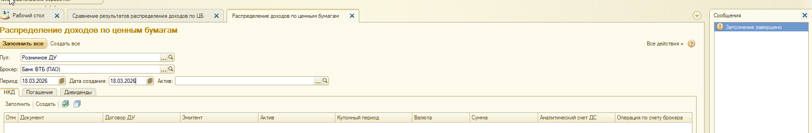
Выгружен снимок после пересоздания (снова 7 582 операций), затем сравнение файлов ДО и ПОСЛЕ.
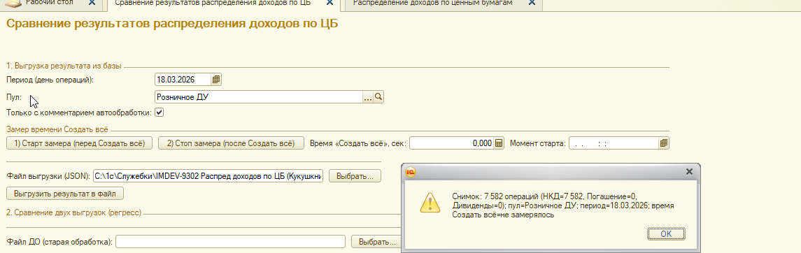
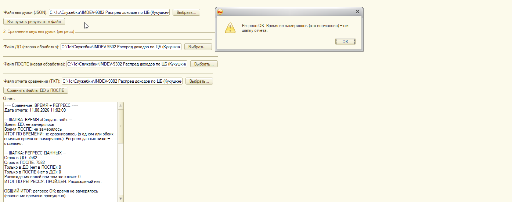
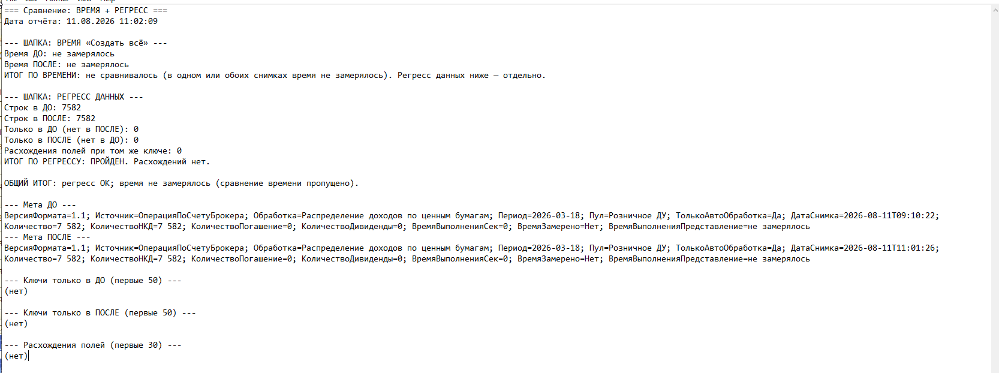
=== Сравнение: ВРЕМЯ + РЕГРЕСС === Дата отчёта: 11.08.2026 11:02:09 --- ШАПКА: ВРЕМЯ «Создать всё» --- Время ДО: не замерялось Время ПОСЛЕ: не замерялось ИТОГ ПО ВРЕМЕНИ: не сравнивалось (в одном или обоих снимках время не замерялось). Регресс данных ниже — отдельно. --- ШАПКА: РЕГРЕСС ДАННЫХ --- Строк в ДО: 7582 Строк в ПОСЛЕ: 7582 Только в ДО (нет в ПОСЛЕ): 0 Только в ПОСЛЕ (нет в ДО): 0 Расхождения полей при том же ключе: 0 ИТОГ ПО РЕГРЕССУ: ПРОЙДЕН. Расхождений нет. ОБЩИЙ ИТОГ: регресс OK; время не замерялось (сравнение времени пропущено). --- Мета ДО --- ВерсияФормата=1.1; Источник=ОперацияПоСчетуБрокера; Обработка=Распределение доходов по ценным бумагам; Период=2026-03-18; Пул=Розничное ДУ; ТолькоАвтоОбработка=Да; ДатаСнимка=2026-08-11T09:10:22; Количество=7 582; КоличествоНКД=7 582; КоличествоПогашение=0; КоличествоДивиденды=0; ВремяВыполненияСек=0; ВремяЗамерено=Нет; ВремяВыполненияПредставление=не замерялось --- Мета ПОСЛЕ --- ВерсияФормата=1.1; Источник=ОперацияПоСчетуБрокера; Обработка=Распределение доходов по ценным бумагам; Период=2026-03-18; Пул=Розничное ДУ; ТолькоАвтоОбработка=Да; ДатаСнимка=2026-08-11T11:01:26; Количество=7 582; КоличествоНКД=7 582; КоличествоПогашение=0; КоличествоДивиденды=0; ВремяВыполненияСек=0; ВремяЗамерено=Нет; ВремяВыполненияПредставление=не замерялось --- Ключи только в ДО (первые 50) --- (нет) --- Ключи только в ПОСЛЕ (первые 50) --- (нет) --- Расхождения полей (первые 30) --- (нет)